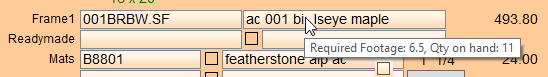

Automatic Inventory Overview
-
See also: Manual Inventory Overview
Before You Begin...
-
Each Price Code item must have a quantity (or footage, for moulding only) in the Qty field (in the Auto Inv tab). FrameReady can then:
-
calculate the moulding footage used on a Work Order
-
remove that required footage from inventory
-
identify the supplier you have selected to order the moulding from
-
and, when you generate a Purchase Order, enter the footage amount onto the PO
-
-
Readymade products added to the Products file can also have a quantity. Use the IN field in the Pricing tab, or for FrameReady Multi Site, in the Multi Site Inventory tab.FrameReady can then:
-
remove the quantity from inventory (in the Products file)
-
Pros & Cons of using Automatic Inventory
The Plus Side
-
It is fast and easy.
-
FrameReady calculates the moulding footage used on a Work Order, removes the required footage from inventory, identifies the supplier you have selected to order and, when you generate a Purchase Order, enters the amount onto it.
Tip: While on a Work Order, hover the mouse over Frame1 description to see the Required Footage and Qty on hand.

The Negative Side
-
FrameReady cannot know if there was a flaw in the material and you actually used more than required; or if an error was made in cutting and more material was taken from inventory.
-
Also, after removing 8 feet from a 10 foot length of moulding, FrameReady will leave 2 feet in stock -- while in fact it may have been discarded.
-
Only the Total Footage is shown on the inventory screen. You must set up this option using the Main Menu > Work Orders Options screen.
How to Activate/Deactivate Automatic Inventory
Automatic Inventory and Work Orders
When you activate Auto Update of Materials Inventory this is what happens:
-
When a Work Order is created, a special data entry screen appears.
-
To exit this screen, click either the WORK ORDER DONE or KEEP AS ESTIMATE button. There is no other way to exit.
-
If you click the WORK ORDER DONE button, then the inventory automatically updates.
-
If you click the KEEP AS ESTIMATE button, then the inventory will not be affected.
How to choose: Work Order Done or Keep as Estimate?
-
Work Order Done:
The customer is committed to purchasing the work; you are committed to building it; you want your inventory to reflect this and/or you want to order the materials. -
Keep as Estimate:
The customer has not committed to purchasing the work; you do not want your inventory to change, nor do you want to order the materials.
Automatic Inventory In Action
-
The automatic inventory is calculated and removed when a Work Order is created and you click the WORK ORDER DONE button.
-
The amount of footage required is deducted from stock.
-
The amount required for matboard is calculated to the nearest quarter sheet, for example, and deducted from stock.
-
A product entered into the Readymade field is deducted from stock.
-
Note: If there is no quantity on hand, then FrameReady assumes "zero" and then deducts the required amount and shows it as a negative.
-
When the order for the stock arrives, the amount received can be entered into inventory by clicking the Accept button in the Purchase Orders file.
-
While using the automatic inventory system, you can identify where your lengths of moulding are stored by using the Location field (in the Auto-Inv tab in the Price Codes).
Note: only the first Location field prints onto a Work Order, regardless of which inventory system you use; automatic or manual.
Caution: Over time, the automatic inventory will have accumulated a number of scrap pieces which, when totalled together, can appear to be a full length of moulding. It is therefore important to occasionally check your stock and adjust the Qty field as necessary.
Committed Feature
-
In the Products file, the Committed field indicates that the product has been added to a Work Order (when you select Artwork from inventory) but the Work Order has not yet been posted to an Invoice. This lets you know, at a glance, that the product 'might' be sold.
-
It is best used for single products (where the inventory count is one) so that you do not sell a single item to two customers. The Products file only adjusts inventory when the Work Order is posted to an Invoice.
-
The Committed field in Price Codes is available only in FrameReady Wholesale.
How to edit a Work Order with Auto Update Activated
-
In order to change, edit, or modify a Work Order, you must first click the purple Modify Work Order button.

-
Clicking the Modify Work Order button puts the form into edit mode and moves all items back into inventory. Later, when you exit the data entry screen, the items are removed from inventory.
There are pros and cons for using either auto or manual inventory systems. In the Price Codes file you will need to use one or the other, or none.
© 2023 Adatasol, Inc.